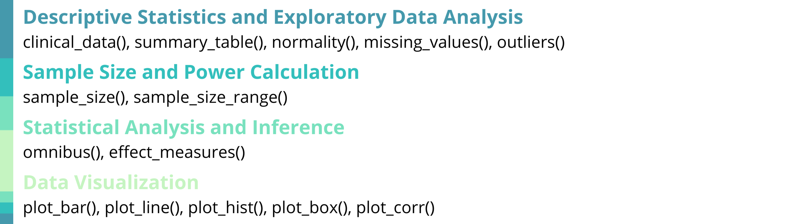
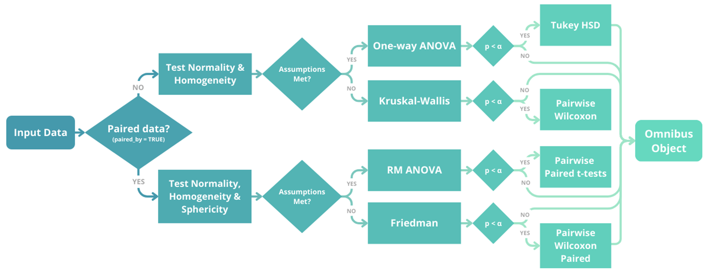

biostats is an R package [@R:2024] that provides a cohesive and structured set of tools for biostatistics and clinical data analysis. The package includes 14 specialized functions covering descriptive statistics, exploratory data analysis, sample size and power calculations, statistical analysis and inference, and data visualization. These functions aim to offer standardized, well-documented workflows that are frequently required in clinical studies, trial planning, and analysis. By consolidating these capabilities into a single framework, the package facilitates consistent, transparent, and reproducible analyses across studies.
This package serves both as an analytical toolkit for professional biostatisticians and clinical data analysts, and as an educational resource for researchers transitioning to R-based biostatistics, including professionals from other domains, clinical researchers, and medical practitioners involved in the development of clinical trials.
biostats is available on the Comprehensive R Archive Network (CRAN) and adheres to CRAN standards for documentation, testing, reproducibility, and long-term maintainability within the R ecosystem.

Statement of need
Biostatistics is a fundamental component of clinical research, essential for validating trial designs, methodologies, results, conclusions, as well as supporting submission to regulatory entities [@Sagar:2023; @Ciolino:2021; @Dwivedi:2022]. In practice, clinical data analysis involves the execution of similar tasks across multiple studies and projects. Typical workflows include the calculation of descriptive statistics and exploratory data analysis, assumption validation, hypothesis testing, primary, secondary, and exploratory statistical analyses, effect size estimation, sample size and power calculations, as well as data visualization.
Popular packages in this field include Hmisc [@Hmisc:2026] and tableone [@tableone:2022] for descriptive statistics, pwr [@pwr:2020] for power and sample size calculations, effectsize [@effectsize:2020] for effect size estimates, and ggplot2 [@ggplot2:2016] for data visualization, among others. While these packages are well-designed and widely used, completing a clinical study workflow typically requires combining multiple packages with different syntax conventions , output formats, and integration patterns. As a result, analysts frequently develop custom code to connect results, automate recurring tasks, or standardize outputs across studies. This fragmentation can lead to inconsistent implementations, duplicated effort, and increased time spent on code development, validation, and quality control.
The biostats package addresses these challenges by providing a unified, clinically oriented framework that consolidates commonly used biostatistical procedures into a single, coherent toolkit. While users still retain full flexibility to write custom code tailored to study-specific needs, biostats is designed to streamline repetitive and foundational tasks in biostatistics and clinical data analysis through consistent syntax, harmonized outputs, and functions that reflect standard clinical workflows. Its goal is to deliver a professional-grade toolset for biostatisticians and clinical researchers while remaining accessible to data analysts from other fields. In addition, biostats serves as an educational resource for users transitioning to R or to biostatistics, offering a structured and reproducible approach aligned with contemporary recommendations for transparent and rigorous statistical practice.
State of the field
Regarding the specific functions in this package, biostats differs from existing packages such as ez [@ez:2016], rstatix [@rstatix:2023], ggblanket [@ggblanket:2025], ggpubr [@ggpubr:2025], extras [@extras:2025], SampleSize4ClinicalTrials [@SampleSize4ClinicalTrials:2021], TrialSize [@TrialSize:2024], TrialSimulator [@TrialSimulator:2025] and simtrial [@simtrial:2025] to name a few, due to its ease of use, consistent syntax, clear and professional presentation of results without unnecessary complexity in interpretation, and thorough, beginner-friendly documentation.
The functions sample_size(), sample_size_range(), effect_measures() and normality() propose a composite approach to variable evaluation. In many existing packages these analyses are implemented through separate functions dependent on specific statistical tests or methods. For example, normality assessment via distinct tests (e.g. Shapiro–Wilk, Kolmogorov–Smirnov), kurtosis measures, or independent graphical analyses; sample size calculations through functions tailored to individual study designs; and effect measures evaluated separately for each type of association. In contrast, the biostats package unifies these analyses within single functions, providing a unified, consistent, and streamlined workflow.
The omnibus() function offers an integrated approach to determining whether parametric linear models or non-parametric alternatives are appropriate. It evaluates data using minimally specified parameters, returns the corresponding model’s analysis, reports observed values per each assumption, runs appropriate post-hoc tests, and presents the results in a clear and easy-to-follow format.
The missing_values(), outliers(), and summary_table() functions present data and analysis in a clean and organized format with professional visual outputs, as opposed to other alternatives that only return raw values without formatting or graphical complements.
When compared to other available options, the clinical_data() function offers a simple but realistic and clean dataframe of simulated clinical data, ideal for users who want sample data without highly specialized parameters.
The ggplot2 wrapper functions included in this package are designed to require minimal code and parameter specifications, while quickly producing professional publication-grade visualizations and fully retaining the flexibility to further customize ggplot2 objects.
Software Design
The biostats package was designed to balance analytical rigor, usability, and reproducibility in applied biostatistics and other analytical fields where these tools could also be useful. The structure of the package follows a unified, workflow-oriented design, where each function performs a complete analytical step and returns clear, structured outputs that can be implemented as input for subsequent analysis with other functions. This approach prioritizes transparency and auditability, enabling analyses to be inspected, reproduced, and reviewed in a stepwise manner. To support chaining, reporting, and downstream reuse, parameters and outputs are standardized across functions.
Visualization functions return native ggplot2 objects rather than static figures. This design enables users to quickly produce professional, publication-grade visualizations with minimal code, while retaining full flexibility to customize aesthetics and formatting to meet specific reporting or journal requirements without modifying internal package logic.
Overall, this package aims to emphasizes clarity, consistency, and reproducibility, supporting both analytical workflows and educational use by researchers and professionals transitioning to R-based biostatistics and clinical data analysis.
Research Impact Statement
The biostats package has been released on CRAN (current version: 1.1.1), ensuring standardized installation, long-term availability, and seamless integration within the R ecosystem. It is also publicly available and maintained on GitHub, where it is accompanied by reproducible examples, detailed documentation, and an active issue tracker. Updates have been implemented based on the authors’ real-world use, as well as user feedback, supporting transparency, reproducibility, and community-driven improvement.
Since its release, the software has demonstrated early but meaningful adoption within the biostatistics and broader data analysis communities, reflected by package downloads, GitHub stars, active engagement through comments, shares, and reactions across professional social media platforms. In addition, the authors have received positive feedback and feature suggestions from users across multiple disciplines, including data science, clinical research, healthcare, and applied statistics, indicating relevance beyond a single application domain.
The package addresses a common challenge in applied research: the fragmentation of statistical workflows across multiple scripts and tools. By providing a unified set of functions for core biostatistical tasks, it promotes reproducible and transparent analysis, as well as providing thorough documentation for educational purposes.
Key features
Descriptive Statistics and Exploratory Data Analysis
clinical_data() creates a simulated clinical trial dataset with subject demographics, multiple visits, treatment groups with different effects, numerical and categorical variables, as well as optional missing data and dropout rates.
summary_table() performs descriptive statistics with normality assessment (Shapiro–Wilk or Kolmogorov–Smirnov with Lilliefors’ correction), selects appropriate tests such as Welch’s t-test or Mann–Whitney U for numerical variables and chi-squared or Fisher’s exact tests for categorical variables, and computes effect sizes including Cohen’s d, Mann-Whitney U effect size (r), odds ratios, and Cramer’s V.
missing_values() visualizes missing data patterns, outliers() identifies extreme values using Tukey’s method with customizable thresholds, and normality() performs an assessment of distributions with Q-Q plots, histograms, and multiple diagnostic tests based on the recommendations mentioned by @Mishra:2019 and methods by @Lilliefors:1967 and @Dallal:1986.
Sample Size and Power Calculation
sample_size() and sample_size_range() are specifically focused on sample size calculation for clinical trials based on the equations in @Chow:2017, supporting equality, equivalence, and non-inferiority/superiority hypothesis, with parallel or crossover designs, and evaluating outcomes specified in means or proportions.
Statistical Analysis and Inference
omnibus() performs multi-group hypothesis testing to evaluate overall differences among three or more groups, with the theory behind this function being influenced by the works of @Blanca:2017 and @Field:2012. This function automatically conducts assumption diagnostics and selects the appropriate statistical test based on data characteristics. It supports both independent and repeated-measures designs and applies one-way ANOVA, repeated-measures ANOVA, Kruskal–Wallis test, or Friedman test as appropriate. When significant effects are detected, omnibus() also performs post-hoc comparisons.

effect_measures() calculates effect measure indices commonly required in clinical research, including odds ratios, risk ratios, and number needed to treat or harm.
Data Visualization
The plotting functions plot_bar(), plot_line(), plot_box(), plot_hist(), and plot_corr() generate publication-ready visualizations tailored for clinical research. These functions display summary measures such as means, medians, standard errors, standard deviations, and 95 percent confidence intervals, and they apply consistent formatting, grouping structures, and labeling to enhance interpretability. Each function returns a fully customizable ggplot2 object, allowing users to refine themes, annotations, scales, and other graphical elements.
License and Availability
The biostats package is distributed under an MIT license with source code, full documentation, and examples for all functions available on GitHub.
Acknowledgements
The authors wish to acknowledge the R open-source community for their ongoing maintenance of the packages upon which biostats depends, and for their continued commitment to transparency and reproducibility in scientific research. Gratitude is also extended to Laboratorios Sophia S.A. de C.V. for supporting the authors through salaries and employment, and for fostering an environment that promotes innovation, open-source development, and open science.
AI usage disclosure
Generative AI tools were used during the development of the biostats package to assist with code refinement, debugging, automated tests, and the configuration of continuous integration and continuous deployment (CI/CD) workflows through GitHub actions. These tools were also used to review and improve the final manuscript. All AI-generated suggestions were carefully reviewed, modified, and validated by the authors. The authors assume full responsibility and accountability for the reliability, integrity, and maintenance of the software provided.